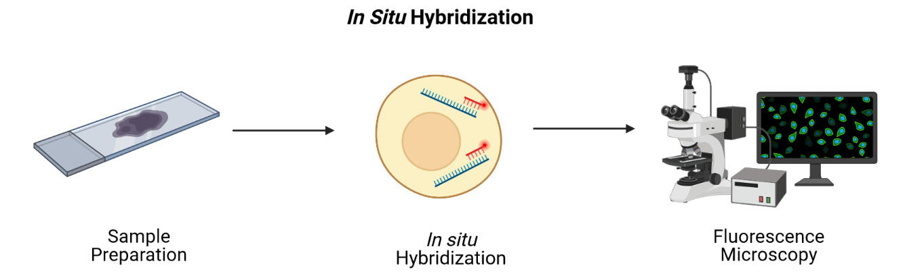
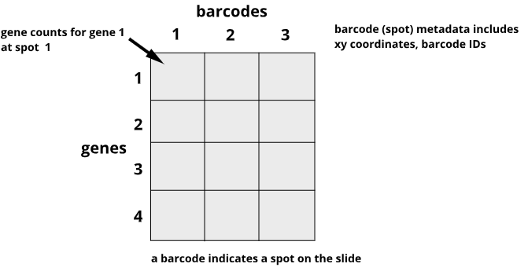

Which cells are in a tissue, and how are they organized?
How do cells interact within the tissue?
How do different tissue structures interact molecularly?
Courtesy: Dept of Histology, Jagiellonian Univ Med College, CC BY-SA 3.0 DEED
Spatial transcriptomics addresses a key obstacle in bulk and single-cell studies: their loss of spatial information
Fred the Oyster, CC BY-SA 3.0 DEED Public domain via Wikimedia Commons
Two main approaches
imaging
next-generation sequencing
Imaging-based technologies
using fluorescence in-situ hybridization (FISH)

SlifertheRyeDragon, CC BY-SA 4.0 via Wikimedia Commons
Sequencing-based technologies: arrays
James Chell, CC BY-SA 4.0, via Wikimedia Commons
Strengths and weaknesses of imaging- vs sequencing-based technologies
Technology
Gene detection efficiency
Transcriptome-wide profiling
Spatial resolution
Tissue area
imaging-based
+
-
+
-
sequencing-based
-
+
-
+
10X Genomics Visium
10X Genomics Visium
Mapping expression data back to histological image
James Chell, CC BY-SA 4.0, via Wikimedia Commons
Spatial data

Challenge: Row and column sums
What does the sum of a single row signify?
What does the sum of a single column signify?
Solution
The row sum is the total expression of one gene across all spots on the slide.
The column sum is the total expression of all genes for one spot on the slide.
Data and study design
Transcriptome-scale spatial gene expression in the human dorsolateral prefrontal cortex. Maynard et al, Nat Neurosci 24, 425–436 (2021)
Data and study design
Challenge: What do you notice about the experimental design that might create issues during data analysis? Why might the authors have done the experiment this way? Is there anything that can be done about this?
Sometimes confounding is unavoidable
when studies depend on donor availability
if you can’t predict when samples will be available
when studies require intact, high-quality RNA
Important considerations for rigorous, reproducible experiments
Replication
Challenge: Which kind of error?
A study used to determine the effect of a drug on weight loss could have the following sources of error. Classify the following sources as either biological, systematic, or random error.
1). A scale is broken and provides inconsistent readings.
2). A scale is calibrated wrongly and consistently measures mice 1 gram heavier.
3). A mouse has an unusually high weight compared to its experimental group (i.e., it is an outlier).
4). Strong atmospheric low pressure and accompanying storms affect instrument readings, animal behavior, and indoor relative humidity.
Solution: Which kind of error?
1). A scale is broken and provides inconsistent readings. random
2). A scale is calibrated wrongly and consistently measures mice 1 gram heavier. systematic
3). A mouse has an unusually high weight compared to its experimental group (i.e., it is an outlier). biological
4). Strong atmospheric low pressure and accompanying storms affect instrument readings, animal behavior, and indoor relative humidity. random or systematic; you argue which and explain why
Challenge: How many technical and biological replicates?
In each scenario described below, identify how many technical and how many biological replicates are represented. What conclusions can be drawn about error in each scenario?
1). One person is weighed on a scale five times.
2). Five people are weighed on a scale one time each.
3). Five people are weighed on a scale three times each.
4). A cell line is equally divided into four samples. Two samples receive a drug treatment, and the other two samples receive a different treatment. The response of each sample is measured three times to produce twelve total observations.
Solution: How many technical and biological replicates?
1). One person is weighed on a scale five times. 1 biological sample (not replicated) with 5 technical replicates.
2). Five people are weighed on a scale one time each. 5 biological replicates, 1 technical measurement (not replicated).
3). Five people are weighed on a scale three times each. 5 biological replicates, 3 technical replicates each
4). A cell line is equally divided into four samples. Two samples receive a drug treatment, and the other two samples receive a different treatment. The response of each sample is measured three times to produce twelve total observations. 4 biological replicates, 3 technical replicates each
Challenge: Treatment and control samples
You plan to place samples of treated tissue on one slide and samples of controls on another slide. What will happen when it is time for data analysis? What could you have done differently?
Solution: Randomize treatment and control samples to slides
Challenge: Time points
Your study requires data collection at three time points: 5, 10, and 15 weeks. At 5 weeks, run samples through Visium. Repeat this for 10- and 15-week samples.